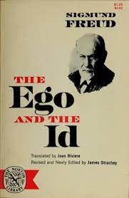
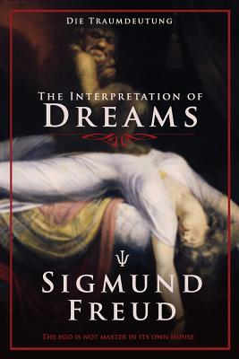

The Life Of Sigmund Freud
His Works
 - Studies on Hysteria (1895)
- The Interpretation of Dreams (1900)
- The Psychopathology of Everyday Life
- Three Essays on the Theory of Sexuality (1905)
- Jokes and Their Relation to the Unconcious (1905)
- Totem and Taboo (1913)
- On Narcissim (1914)
- Intro to Psychoanalysis (1917)
- Beyond the Pleasure Principle (1920)
- The Future of an Illusion (1927)
- Civilization and Its Discontents (1930)
- Moses and Monotheism (1939)
“The voice of the intellect is a soft one, but it does not rest until it has gained a hearing. Ultimately, after endless rebuffs, it succeeds. This is one of the few points in which one may be optimistic about the future of mankind.” - Sigmund Freud